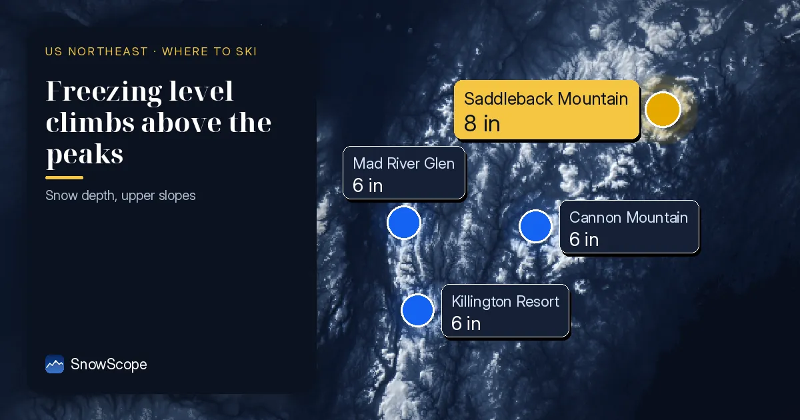
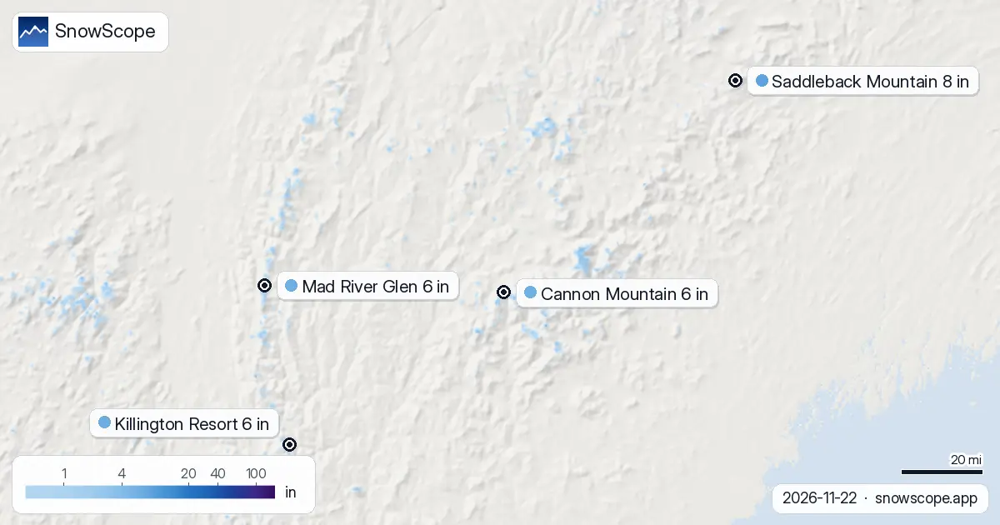

Saddleback Mountain 20 cm: freezing level climbs above the peaks
Saddleback Mountain holds the deepest snow in the Northeast at 20 cm on its upper slopes, but today's warm air mass is pushing the freezing level well above the summits. Rain will fall across all elevations where your skis travel, turning what little snow exists into slush and exposing rock by mid-afternoon.
See the live snow forecast for Saddleback Mountain in the SnowScope appSnow depth, powder alerts and the 3D map, free.
Where the depth sits today
Of 112 resorts tracked across the Northeast, only 31 have measurable snow cover on 22 November. Saddleback Mountain leads with 20 cm at its top at 1,218 m (4,000 ft), while Cannon Mountain holds 16 cm. This is thinner than usual for late November—at this height and date, we normally see around 6 cm, so conditions are well below the seasonal average. The snow that remains is fragmented and patchy, concentrated only on the highest terrain.
Lower elevations have already turned bare. SnowScope shows zero depth at the base of every major resort. The snow map last confirmed snow at Cannon Mountain on 20 November, but most other peaks showed nothing. This early-season snow arrived with little water content and weak bonding; it has not consolidated into stable coverage.
| Resort | Snow depth | New snow, 72 h | Coming, next days | Top |
|---|---|---|---|---|
| Saddleback Mountain | 8 in (20 cm) | 0 in (0 cm) | 0 in (0 cm) | 3,996 ft (1,218 m) |
| Cannon Mountain | 6 in (16 cm) | 0 in (0 cm) | 0 in (0 cm) | 4,039 ft (1,231 m) |
| Mad River Glen | 6 in (16 cm) | 0 in (0 cm) | 0 in (0 cm) | 3,629 ft (1,106 m) |
| Killington Resort | 6 in (15 cm) | 0 in (0 cm) | 0 in (0 cm) | 4,140 ft (1,262 m) |

Rain replaces snow from summit to base
The freezing level today rises to 3,760 m (12,330 ft) at its daily high—far above even Saddleback's summit. This means rain, not snow, falls across your entire vertical drop. The boundary between wet and dry air passes through the mid-troposphere, well above the ski terrain. Water will soak into the existing snow patches, collapse the weak early-season structure, and expose subsurface rock within hours.
By tomorrow, 23 November, the freezing level drops sharply to between 260 m and 3,010 m, bringing genuine cold air back into the mountains. Snow may fall on the highest slopes of Saddleback and Cannon, but only 5–8 cm is forecast over the next seven days—too little to rebuild coverage after today's rain damage.
Upper slopes hold the longest
North-facing terrain and elevations above 1,100 m will shed rain somewhat faster than south or west aspects, simply because they receive less direct solar heating. Saddleback's peak at 1,218 m will likely retain patches of wet snow longest into the afternoon, but the word 'retain' is generous—these patches will be thin, waterlogged, and hiding rock.
The base areas and mid-mountain zones are already bare down to grass and dirt. Groomed runs at lower elevations have no snow to ski; upper runs may offer a few metres of skiable terrain if you pick the coldest north-facing pitches and reach them before 14:00 local time.
What SnowScope shows for the coming week
By 25 November, snow-covered area across the entire Northeast falls from the current 1,050 km² to just 340 km², and only 19 of 112 resorts retain any white. The region is entering a marginal early-season window. Fresh snow totals of 2–8 cm are scattered and meagre; most will fall at night and vanish within 36 hours if air temperatures climb again.
The comparison to past winters is sobering: at Saddleback, SnowScope shows 2 cm of snow at 936 m today, which is deeper than only 15 of the past 46 November 22nds. This ranks in roughly the lower third of historical conditions for this date.
What to do on the mountain today
If you are aiming to ski, pick Saddleback or Cannon and climb to the highest groomed runs before 10:00. Rain will be arriving during the morning and intensifying. Stay on prepared pistes—early-season snow is thin and rocks lie beneath—and descend before the slush becomes unmanageable. Check the resort website for lift operations; many mountains have limited lifts running in marginal coverage like this.
Avoid off-piste terrain entirely. Early-season snow lacks structure, rocks are barely covered, and wet snow on a thin base creates avalanche risk. Read the official Northeast avalanche bulletin before considering any steep ungroomed slopes, though today is not a day for it.
Tips for skiers
- Ski the highest north-facing groomed terrain at Saddleback or Cannon Mountain before 10:00 today; rain will soak everything by mid-morning and expose rock within hours.
- Stay on marked runs only. The 20 cm at Saddleback's top masks bare ground below—rocks are your enemy on thin early-season coverage.
- Check the official Northeast avalanche bulletin before considering any off-piste; wet snow bonding poorly to thin base increases slide risk.
- Head down by 14:00. Afternoon rain will turn the slush into a unrideable crust and expose all hazards. Conditions will degrade steadily.
- Verify lift status on the resort website before you go. Marginal snow cover may mean limited operations or closure of some terrain.
About these numbers
Resort snow depths are the deepest snow on the resort's upper slopes on the date shown; they are estimates for an area, not a measurement at one point. Forecasts can change. Always read the official avalanche bulletin before going off-piste.
Official avalanche bulletins: Mount Washington Avalanche Center
Cite this report
For research, teaching or the press: the numbers and charts are free to reuse under CC BY 4.0 with this citation.
SnowScope (2026), Saddleback Mountain 20 cm: freezing level climbs above the peaks, https://snowscope.app/blog/en/2026/11/us-northeast-where-to-ski-best-snow-22-november-2026.html, accessed 2026-11-22
SnowScope (Atlas Labs). (2026, November 22). Saddleback Mountain 20 cm: freezing level climbs above the peaks. SnowScope snow reports. https://snowscope.app/blog/en/2026/11/us-northeast-where-to-ski-best-snow-22-november-2026.html
BibTeX
@misc{snowscope2026usnortheastwheretoskibes,
author = {{SnowScope (Atlas Labs)}},
title = {Saddleback Mountain 20 cm: freezing level climbs above the peaks},
year = {2026},
month = nov,
howpublished = {\url{https://snowscope.app/blog/en/2026/11/us-northeast-where-to-ski-best-snow-22-november-2026.html}},
note = {Published 2026-11-23 09:01 UTC; accessed 2026-11-22}
}· CC BY 4.0 · Methods, data and tools →
Saddleback Mountain: snow and temperature by height, this winter vs last (tools) →
Follow Saddleback Mountain
Free: a message when fresh snow is coming, and the forecast every morning.
More snow reports

On 12 November, four US Northeast resorts have less snow than a year ago. Gore Mountain is down 6 cm (2 in). SnowScope snow history, 12 Nov 2026.

Northern Vermont gets its first real snow of the season over the Thanksgiving weekend. Resort by resort, north to south, and what is normal for early December.

Wildcat Mountain forecast to gain 56 cm over 14 days. Week one (23–29 Nov) brings 29 cm, with 22 cm falling on 27 November. Data from 22 November.